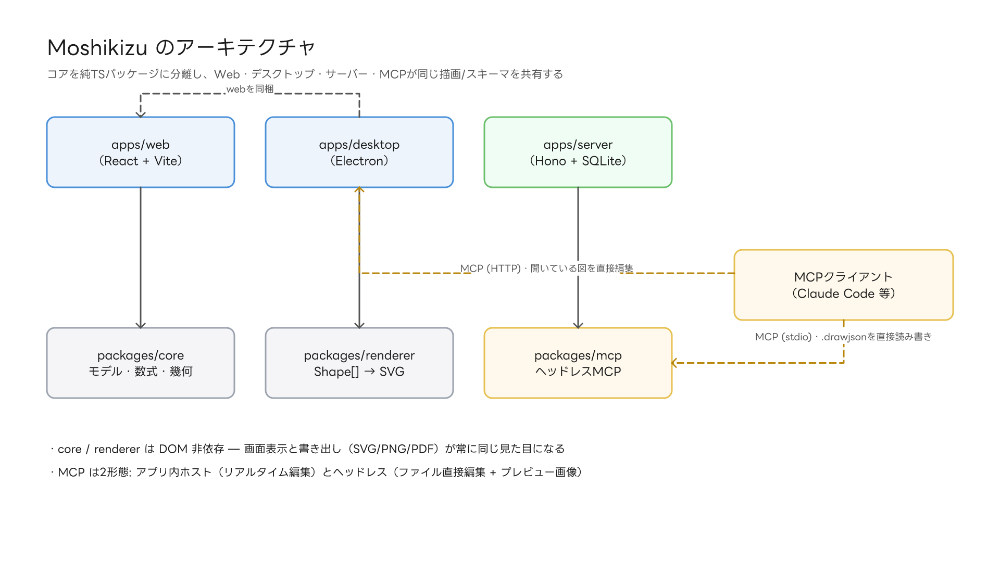
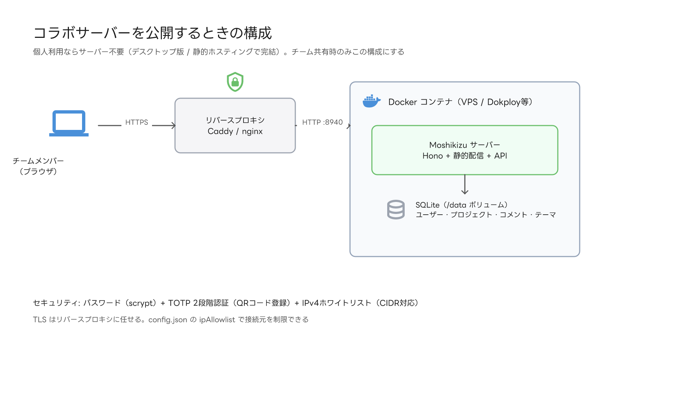

AI エージェント連携
「この図を描いて」で、図ができる。
このページの図は、Moshikizu 自身の MCP 機能で Claude が描きました。エージェントは図を描き、プレビュー画像で自分の結果を確認し、修正までします。
> あなた
Moshikizu のアーキテクチャ図を描いて。apps と packages の依存関係がわかるように。
● Claude
6つのノードとコネクタで作図しました。プレビューを確認し、ラベルの重なりを修正済みです。
✓draw_shapes(6 nodes, 7 connectors)
✓preview_canvas → self-check
✓update_shape(label position)

表もグラフも、頼める
「この表に行を足して」。数式を含む表と、表参照のグラフも MCP から編集できます。

2つの形態を同梱
開いている図をリアルタイム編集するアプリ内ホスト版と、ファイルを直接読み書きしてプレビュー画像を返すヘッドレス版。用途に合わせて選べます。
